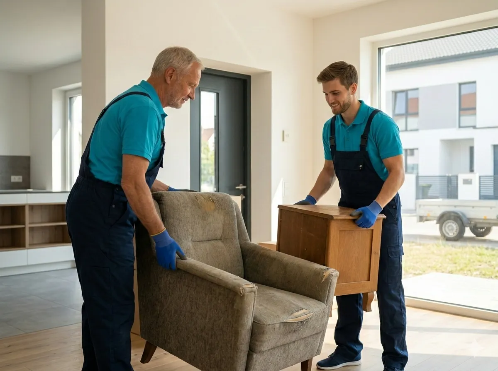
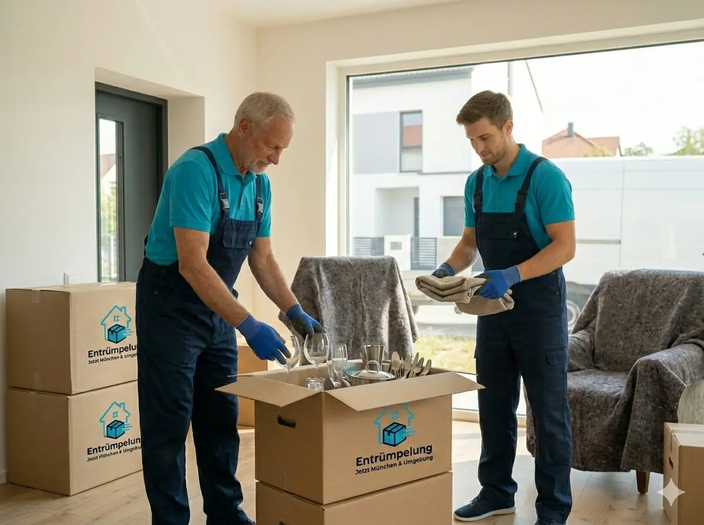
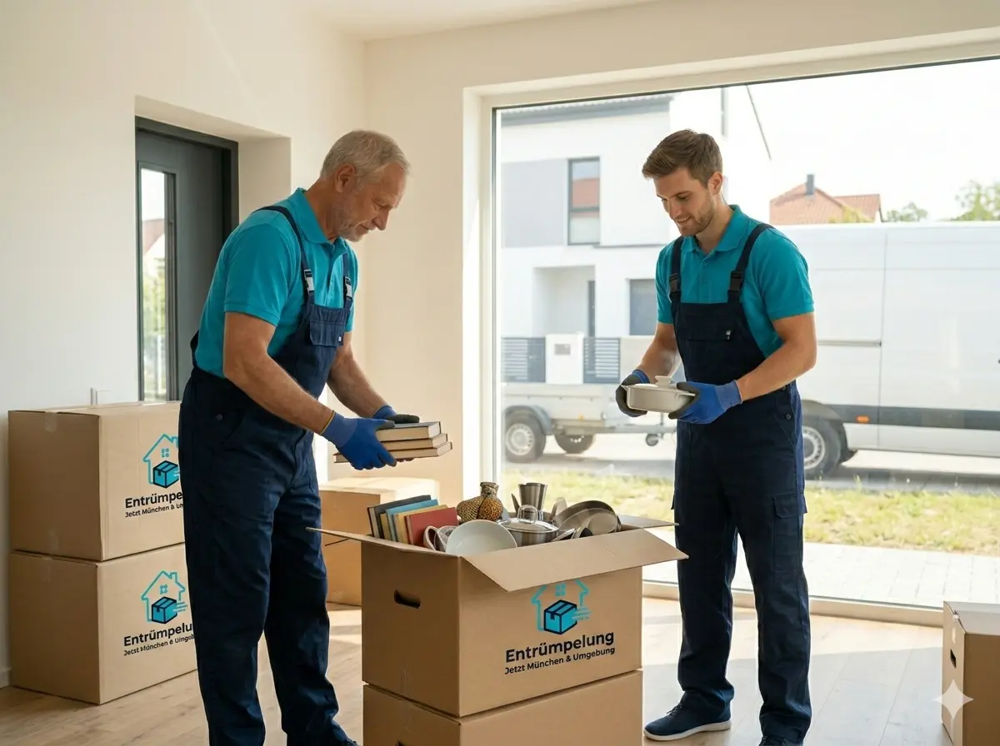
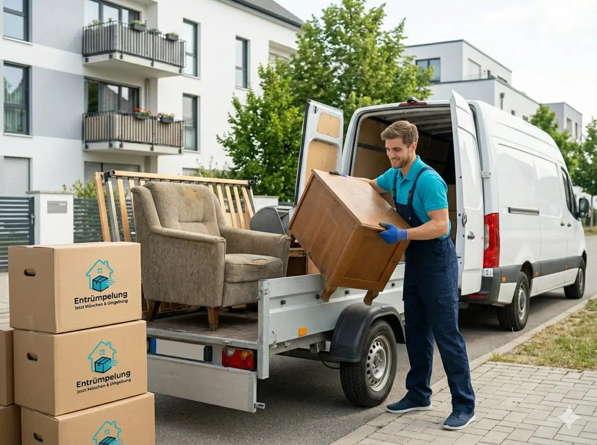
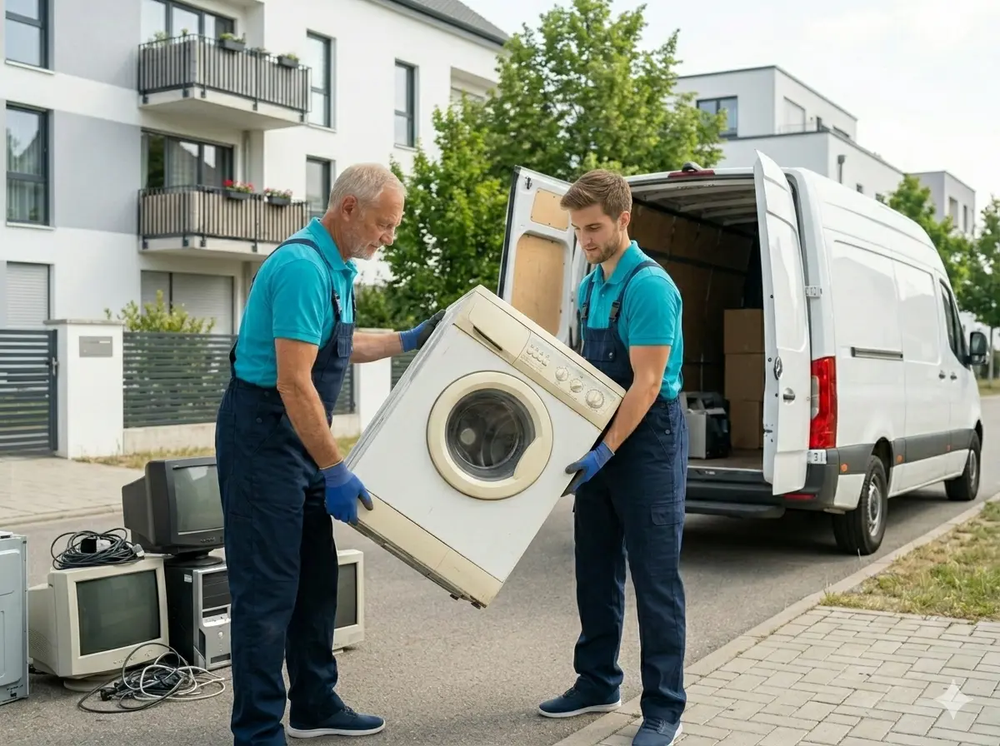
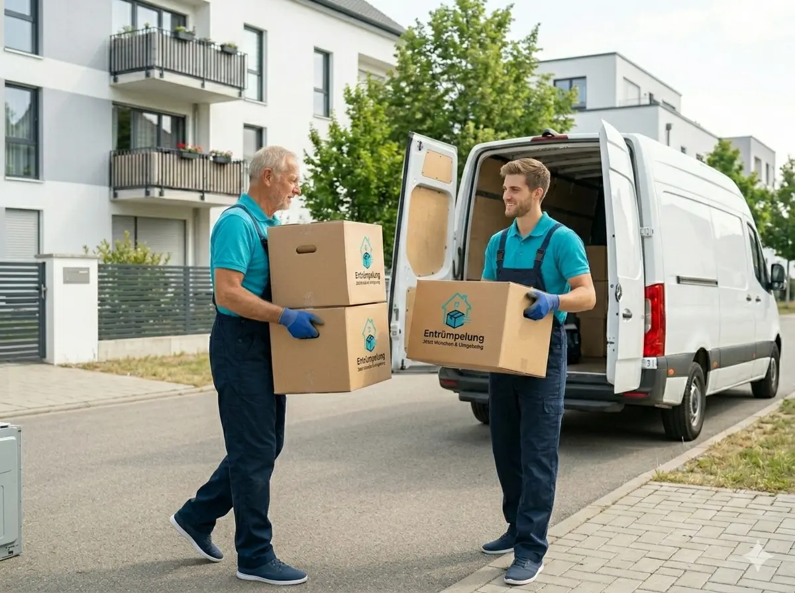

Sperrmüllentsorgung
Abholung & Entsorgung von Sperrmüll – inkl. Tragen, Laden und Transport.
Als einer der vielfältigsten Stadtteile Münchens verbindet Au-Haidhausen Wohnen und Arbeiten. Wir von Entrümpelung Rahimic bieten hier maßgeschneiderte Entrümpelungslösungen für jede Anforderung.
Wählen Sie die passende Entrümpelung – wir erstellen Ihnen ein individuelles Angebot für Au-Haidhausen.

Abholung & Entsorgung von Sperrmüll – inkl. Tragen, Laden und Transport.

Komplettlösung inkl. Sortierung, Abtransport und besenreiner Übergabe.

Diskret und empathisch – z. B. bei Nachlass, Umzug oder Pflegefall.

Transport mit Kombi & Anhänger – ideal für Möbel, Kartons und größere Aufgaben.

Fachgerechte Entsorgung von Elektrogeräten – umweltgerecht & unkompliziert.

Schnell, sauber und zuverlässig – wir räumen Wohnungen, Keller, Garagen & mehr.
Qualität beginnt bei uns mit der sorgfältigen Auswahl unserer Mitarbeiter. Unsere Mitarbeiter sind geschult, zuverlässig und arbeiten mit Liebe zum Detail – auch in Au-Haidhausen.
Wir passen uns Ihrem Tagesablauf an: Entrümpelungen vor oder nach den Geschäftszeiten, am Wochenende oder in den Ferien – wir finden gemeinsam den idealen Zeitpunkt.
Nachhaltigkeit ist kein Trend, sondern Überzeugung. Wir setzen auf biologisch abbaubare Arbeitsmittel und ressourcenschonende Verfahren, ohne bei der Entrümpelungsleistung Abstriche zu machen.
Als Münchner Unternehmen kennen wir die Gegebenheiten in Au-Haidhausen genau – von typischen Altbauwohnungen über Reihenhäuser bis hin zu Gewerbeimmobilien. Wir wissen, worauf es bei Entrümpelungen vor Ort ankommt, und sind mit kurzer Anfahrt schnell bei Ihnen.
Beschreiben Sie kurz Ihr Objekt in Au-Haidhausen (z. B. Fläche, Häufigkeit, besondere Anforderungen). Wir melden uns zeitnah zurück.
Region: München & Umgebung · Termine nach Vereinbarung
Wischen Sie nach links, um weitere Fragen zu sehen.
Die Kosten für eine professionelle Entrümpelung in Au-Haidhausen richten sich nach der Fläche, der Art der Entrümpelung und der gewünschten Häufigkeit. Kontaktieren Sie uns für ein kostenloses, unverbindliches Angebot – wir kalkulieren transparent und fair.
In der Regel können wir innerhalb weniger Tage mit der Entrümpelung in Au-Haidhausen starten. Bei dringendem Bedarf sind auch kurzfristige Termine möglich – sprechen Sie uns einfach an.
Selbstverständlich. Wir bieten in Au-Haidhausen flexible Intervalle – täglich, wöchentlich, zweiwöchentlich oder monatlich. Auch einmalige Einsätze wie Grundreinigungen oder Entrümpelungen sind jederzeit möglich.
Unsere Leistungen in Au-Haidhausen richten sich an Privathaushalte, Büros, Arztpraxen, Hausverwaltungen und Gewerbebetriebe. Wir entwickeln für jeden Kunden ein maßgeschneidertes Entrümpelungskonzept.
Nutzen Sie unser Kontaktformular, schreiben Sie eine E-Mail an info@entruempelung-rahimic.de oder kontaktieren Sie uns über WhatsApp. Beschreiben Sie kurz Ihr Objekt in Au-Haidhausen und Ihren Bedarf – wir melden uns zeitnah mit einem transparenten Angebot.
Entdecken Sie unsere Entrümpelungsleistungen an weiteren Standorten: